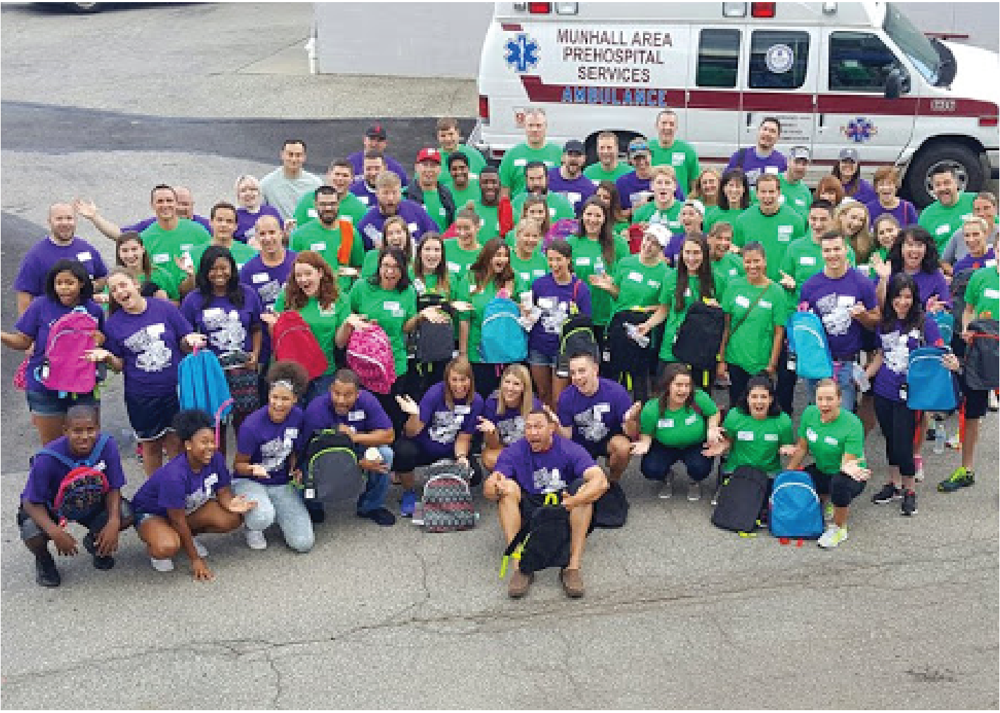

Best of the Batch Foundation
Team
- Annette Chen
- Akash Kejriwal
- Jeremy Lee
Opportunity
The Best of the Batch has two main summer programs, Project C.H.U.C.K. and Next Level Athletics. As these programs continue to grow, the foundation needs a way to keep track of the all kids in each program throughout the different seasons. In the past few years, CMU Information Systems teams have worked on creating a registration and scheduling system for Project C.H.U.C.K. Best of the Batch is expanding the number of programs they offer as well as the number of kids that partake in these programs. There is an opportunity for us to expand past years’ projects to create a more robust, and bulletproof system with added functionality, including the addition of registration for Next Level Athletics and student study hall tracking.
Outcomes
Using past projects as a guide for our application, we began by generating a list of use cases and functionalities based on deficiencies the client identified in past projects as well and new feature requests. From this we started a new application from scratch using a new refactored database design. We created a fully functioning and bulletproof Ruby on Rails application, improving features on the Project C.H.U.C.K. side and implementing a new registration system for Next Level Athletics. In past years, the app was mainly used by admin; however we extended usability so the application is more user friendly for a wide range of users, including volunteers, coaches, and parents. We identified that the application would mostly be used on mobile devices and adapted the application to be mobile friendly. The application also updates information based on the certain year, saving old data but only showing relevant information. We intend that this new application will help Best of the Batch to better organize and increase efficiency when accessing their information.
Deliverables
The main deliverable our team is providing to the client is a web application hosted on Heroku. The web application encompasses two major programs that Best of the Batch runs, Project C.H.U.C.K. and Next Level Athletics. Amongst our deliverables, we are providing documentation for both future teams to continue working on the project as well as documentation for the client to use the web application.